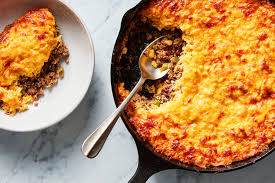
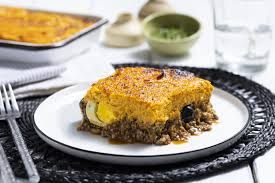

Pastel de Choclo

El pastel de choclo es un plato sudamericano preparado con una pasta horneada de granos tiernos de choclo y,
dependiendo del lugar donde se prepare, es dulce o salado, con relleno o sin relleno. Es tradicional de la gastronomias de Argentina, Bolivia, Chile. Colombia, Ecuador,
Paraguay, Peru, Uruguay.
En esta receta nos concentraremos en el Pastel de Choclo Chileno, que es un plato popular y consumido en las zonas rurales o celebraciones campesinas, y tambien en las fiestas patrias.
Ingredientes para 5 personas:
- 3 latas de Maíz
- 1 unidad de cebolla
- 200 gramos de carne molida
- 4 unidades de huevos
- 1 taza de leche (240ml)
- 50 gramos de aceitunas
- Un puñado de uva pasa
- 1 cucharada sopera de Mantequilla
- Sal a gusto
- Pimienta a gusto
- 5 unidades de muslo de pollo (cocido)
Preparación:
- Picar la cebolla en cubos. Sofreír la cebolla con los 200 gr de carne molida y salpimentar a gusto.
A la par con este proceso poner a hervir 2 huevos. (A la hora de sazonar el sofrito, tener en cuenta que
en las instrucciones siguientes se van a seguir sazonando ingredientes de manera independiente, recomendacion, ser ligeros con la sazón)
- En una fuente colocar el sofrito de carne y cebolla, después agregar las uva pasas, aceitunas y el huevo duro cortado en rodajas.
También agregar las piezas de pollo, tener en cuenta que las presas de pollo pueden ser agregadas enteras, cortadas en piezas o inclusive deshuesadas dependiendo de cada uno,
(Tener en cuenta que el pollo tiene que estar cocido antes de agregar en la fuente).
- Aparte, triturar el maíz y cocinar en una cacerola con la mantequilla, leche y un poco de sal. Revolviendo constantemente
hasta que quede bien cocido. Tener en cuenta que el triturado del maíz no tiene que ser liquido, hay que deshacerle bien para que quede como una pasta con trozos de maíz.
-
Una vez cocido el maíz, retirar del fuego y agregar la tema de los dos huevos restantes y luego agregar a la mezcla las claras
batidas como si fuera merengue, unir todo y vaciar en la fuente que contiene nuestro pollo y sofrito.
- Precalentar el horno a la temperatura maxima posible unos 10 minutos.
-
Finalmente se espolvorea un poco de azúcar arriba del maíz y bajar la temperatura del horno a 180 grados. Dejar nuestro Pastel de choclo por uno 25 a 30 minutos,
o hasta ver que la parte superior se encuentre dorada.
-
Servir el pastel de choclo caliente, este se puede acompañar con ensalada o guarniciones a gusto.
